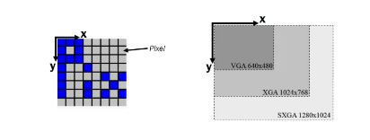
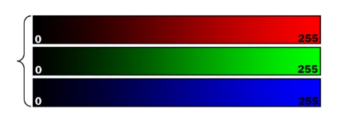
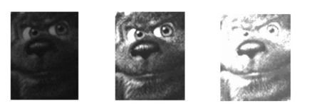
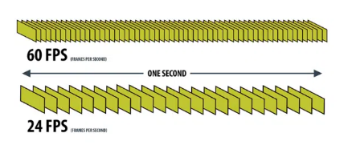

1. 개요
- 렌즈 마운트, 이미지 센서, 프로세서, 전력 전자 장치 및 통신 인터페이스를 포함하는 보호 케이스
- 들어오는 빛(광자)을 전기 신호(전자)로 변환하는 이미지 센서가 있음
- 이미지 센서 구성
- 각각의 포토다이오드는 감지기 디지털 이미지의 픽셀에 해당
- 포토다이오드가 아날로그 값과 연결되어 있는 반면 이미지 픽셀은 디지털 값과 연결되어 있음
- 픽셀은 디지털 이미지에서 가장 작은 요소이며, '그림 요소'의 약자
"포토다이오드" : 호출된 배열 노출 광자의 전자기 에너지가 마이크로 전압으로 변환되는 포텐셜 우물 역할
"ADC(Analog-to-Digital Converter)" : 디지털 값을 출력
"이미지센서"
물리적 구조 : CCD, CMOS
픽셀 치수 : Area scan, Line scan
채도 유형 : Color, Mono
셔터 유형 : Global, Rolling
광 스펙트럼 및 빛의 편광 : UV, SWIR, NIR

2. 디지털 이미지 개념
① 해상도 (Resolution)
- 디지털 이미지는 픽셀로 구성되며, 이미지 해상도는 이미지의 픽셀 열과 픽셀 행 수를 측정한 것
1280 X 1024의 이미지 해상도는 이미지의 너비가 1280픽셀, 높이가 1024픽셀임을 나타냄

② (빛의)세기 (Intensity)
- 이미지 픽셀의 밝기를 세기(Intensity)라고 함
- ADC의 비트 심도가 클수록 세기를 표현할 수 있는 범위가 커짐
예를 들어, ADC의 비트 심도가 8비트인 경우 세기를 표현하는 데 사용할 수 있는 값은 256(0~255)가 됨
ADC의 비트 심도가 12비트인 경우 세기를 표현하는 데 사용할 수 있는 값은 4096이 됨

③ 노출 (Exposure)
- 포토다이오드가 빛에 노출되는 시간을 나타냄
- 노출 시간은 일반적으로 마이크로초(us) 및 밀리초(ms) 단위로 측정

④ 증폭 (Gain)
- 픽셀에 대한 강도 값의 증폭
- 센서에서 포토다이오드 전하의 세기가 커지면 아날로그 게인(analog gain)
- 전하가 디지털 값으로 변화된 후 픽셀 값이 커지면 디지털 게인(digital gain)
⑤ 프레임 속도 (Framerate)
- 측정된 프레임 속도 (초당 프레임 또는 FPS)
- 포토 센서가 1초에 출력할 수 있는 이미지 수
